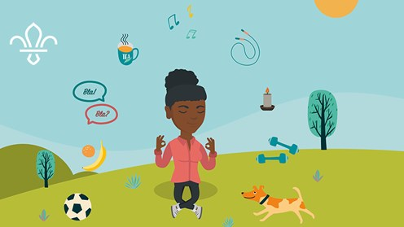

Over 20,000 young people from disadvantaged communities join Scouts
We’re proud to share our latest annual membership figures with you. They show that we’ve had another year of growth, including a marked rise in membership and a wave of new sections opening in areas of deprivation across the UK.
Since 2014, we’ve been focusing on bringing Scouts to some of the UK’s most disadvantaged communities: this is part of our strategy to ensure all of the UK’s young people have access to services that allow them to develop essential life skills. The new figures reveal that we’ve now opened 1,280 sections in areas of deprivation. This means that nearly 20,480 young people from the toughest to reach communities are now a part of the UK Scout movement.
To generate this growth, we’ve employed development officers to work in local communities, seeking out community leaders and meeting places, and setting up these new provisions. They then support the new sections for a few months to ensure they’re self-sustaining and can continue offering high quality youth work once the development team moves onto new challenges.
Examples of new provisions opened in areas of deprivation in key English regions: Young people attending these Scout groups are drawn from the 10% most deprived wards in England.
London – Willesden Scout District
North East - Byker Scout Group
A new Beaver Scout Colony and Cub Scout Pack have been opened, catering for 16 young people – they are supported by seven adult volunteers North West – 1st Wythenshawe Two Beaver Scout Colonies have been opened (48 young people) Two Cub Scout Packs have been opened (48 young people) A Scout Troop has been opened with 20 young people A total of 32 adult volunteers have been recruited Pic 3
East Midlands – 2nd Shirebrook
A Beaver Scout Colony, A Cub Scout Pack and a Scout Troop have been opened catering for 40 young people, supported by five adult volunteers and a full set of Charity Trustees (Chair, Secretary and Treasurer) West Midlands – 148th Birmingham (St Dunstans) Two new Beaver Scout Colonies have been opened, catering for 50 young people, supported by 16 adult volunteers South West - Bridgewater Scout Group Three new sections have been opened, catering for 35 young people spread across Beaver Scout, Cub Scout and Scout sections Eight new volunteer leaders have been recruited to support the work South East - 2nd Southampton In the last year, a new Scout Troop has been opened to cater for nine young people with more being recruited later this term. The Troop are supported by five adults.
East Anglia – 1st Jaywick
Three new sections have been opened catering for 21 young people, spread across Beaver Scout, Cub Scout and Scout sections Eight new volunteer leaders have been recruited

Scouts at the Poles
Scouts often go to the ends of the earth to make things happen. But some take this more literally than others. Chris James pulls on his ski boots to discover the stories of Scouts who’ve ventured into the frozen wildernesses of the Arctic and Antarctic in search of adventure
When Scout Joe Doherty finally reached the South Pole in January 2019, things did not quite go to plan. ‘My skis broke on the last day so I had to walk.’ It wasn’t quite the heroic scene he’d imagined six years before, when he first had the idea to head for Antarctica. Joe’s astonishing achievement – to head up the first Scout-led expedition to ski to the South Pole and kite ski back – is yet another milestone in the history of Scouts’ adventures at the poles.
10 ways to deal with stress this summer
It’s supposed to be a chance to relax, but summer can often be a stressful time. Travel arrangements, changes to routine, family dynamics, and, of course, the impending exam results day all take their toll. To help you come out the other side of summer smiling, we’ve put together a list of 10 small things that might help you beat stress.
Breathing
It sounds simple, but a few deep breaths are probably the easiest and quickest thing to do when stress starts to strike. Focusing on your breathing can help take your mind off what’s bothering you, and it calms your body down too.
Go for a walk
If you’ve got a few minutes, getting outside into the fresh air can be a great stress reliever. A quick walk uses up energy (which can be great if stress makes you antsy) and it can help you refocus.
Write it down
Especially if you’re feeling overwhelmed, making a list of what’s going on (or what you need to do) can be a great starting point. Even just getting stuff down on paper can help clear your head. Once it’s all there, you can start planning some solutions. Often, it’s not as bad as you feared once it’s all out in the open.
Talk about it
Find someone you trust, and voice your frustrations to them. It’s a bit of a cliché, but a problem solved really can be a problem halved – you’re not in it alone, and you’ve got someone else to help you get to the other side.
Eat something tasty
It doesn’t matter if you’re a fruit fiend or devoted to nuts and seeds – there are plenty of foods that contain vitamins and minerals that can help relieve stress. If you’ve got time, maybe you could even head to the kitchen. Watching ingredients combine and change as they transform into a flapjack, energy bar, or soup can be really calming.
Laugh
Sometimes the best way to deal with stress is to take your mind off things for a little while. Thanks to the wonders of the internet, you’re never more than a click away from a dog reviewing human food or cats falling off things – or finding a funny GIF to put a smile back on your face.
Have a hot drink
It might not be the best tip for a heatwave, but since they’re few and far-between in the UK, a comforting hot drink is often relaxing. Give something without caffeine a go (such as camomile or peppermint tea), especially if you’re stressed before bed and need to calm down so you can sleep.
Get some rest
Stress takes its toll on our bodies, and rest is vital to recharge. Give yourself permission to relax, and make sure you leave enough time for a good night’s sleep. A bedtime routine can really help – stop scrolling social media, and do something calming such as reading or colouring.
Light a candle
Their soothing smell and flickering flame make candles a perfect partner for a relaxing evening. Orange could help reduce stress, lavender could help you relax, and vanilla could boost your mood. What’s your favourite scent?
Pet an animal
Size doesn’t matter here – a hamster or gerbil can be just as calming as a Great Dane or a pony. If you don’t have a pet at home, you could visit a city farm or petting zoo, ask an animal-loving friend if you can visit, or just go on a walk around your neighbourhood in hope of encountering a furry friend.
These tips don’t fix the big stuff, but hopefully they make the moment more manageable. If you’re worried, you can always check out childline. They’re there online and on the phone, anytime.
